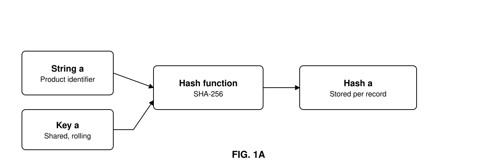
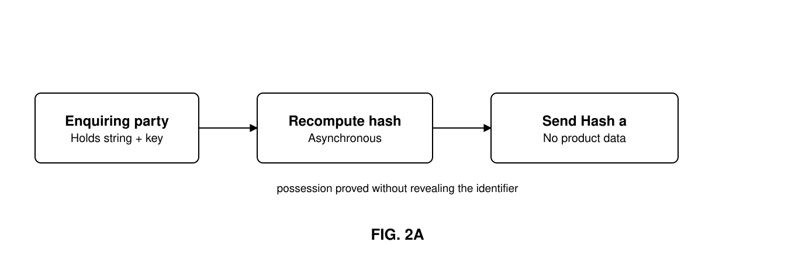
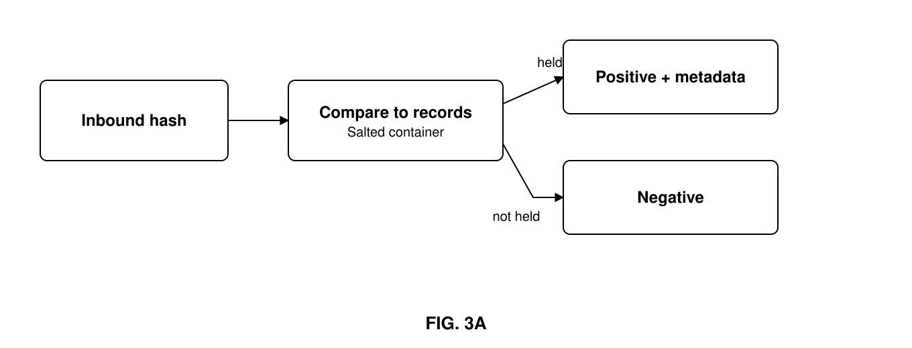

A process, in a system or network of computers, where two or more parties wish to isolate and protect their information about electronic physical product identifiers, but wish to share the state, status, or part or all of their records for that item if another correctly credentialed participant presents an obscured but identical set of identifiers to those of an item of which they have knowledge.
The 2014 Drug Supply Chain Security Act (the DSCSA) requires that all pharmaceutical product be uniquely labelled, and that correctly credentialed third parties can verify those labels with the manufacturer during the entirety of a product's lifecycle. As the DSCSA does not stipulate the use of a centralized database, each manufacturer is responsible for verifying their own product; third-party IT suppliers can be used to manage those verifications.
The DSCSA further requires that by 2023 all product be fully traceable, from manufacture to dispensing. As participants do not wish to reveal their full inventory activity to each other, the Act allows each trading party to release information about a product to the next trading party and to vouch for its origins. This leads to two issues: how best to communicate the good state of a product from one party to the next, and how to backtrace such status over time and across all parties if a product is found to be tainted or tampered with.
This invention addresses that problem, and allows the state, current price, location or any other useful metadata to be associated with an item and made searchable by only authorized parties — while still obscuring any other specific or aggregated data about the product, or about each filing party's activity.
In an electronic system and method, Stringa is a physical product identifier: a sequence of identifying data that can distinguish one item from all other alike items in a group or batch; can identify that group or batch from any other; can identify this product from any other physically alike product or version of the product from the same manufacturer; and can further distinguish this manufacturer's alike product from any other manufacturer's alike product.
In this system or network of computers, participating members of the community record all their physical product identifiers in the same format as Stringa in a private repository, which also stores associated useful metadata about the product's historical activity — its state, location, ownership, temperature, or other products it has been associated with for the purposes of packing or shipping.
A static or rolling encryption Keya, known to all authorized parties within the community, is combined with agreed parts of the identification string and used to calculate a unique, fixed-length output Hasha by application of a hashing algorithm such as SHA-256 or another mathematical method, and added to each string's records.
When a community member wishes to make an inquiry of another party about a specific item, they use the output hash. If any other party has seen the item, they will have generated the same output hash and, by comparison to their own records, will understand which item the inquiry is about. If a community member has not seen that particular item, the hash is meaningless — and no details of the underlying product have been shared.
The addition of the extra string or key ensures that unauthorized parties who are not privy to Keya but happen across Stringa cannot confirm its existence against a community member's records. This allows the system to exist across a series of published, replicated ledgers which could be accessible to all — as in a blockchain or distributed ledger system — or in a private-access equivalent where, even though parties are invited to join and their access controlled, they are still not fully trusted.
When a request for information is sent using Hasha and presented to one or more other community members, the members return a negative response if they do not have that hash in their records, or a positive response if they do. If required, further keys can be distributed and the output hashes generated and stored. These further Keysb…n can require a positive responder to include agreed additional metadata, giving the system flexibility and allowing sub-groupings of authorized parties.
For the purposes of search efficiency, Hasha could be stored within a group, where the group represents a specific attribute such as — but not limited to — time, location, state, ownership or financial lien. The contents of this group may be obscured by encrypted containerization, where the container responds to a single inquiry with a single response. As the data size of the container may be ascertainable, salt can be added in the form of non-pertinent data that equalizes the storage size of all containers, thus preventing inference of the number of records held from the size of the container once it resides on the ledger.
While similar to a zero-knowledge proof, this claim is unique in that — because the physical product identifier is previously known to both parties in any transaction — the hash output can be generated asynchronously and stored in advance, greatly speeding up any later verification. There is no requirement to run a series of reiterative challenges against the revealing party: a single ask-and-answer message set suffices to attain confirmation. And as the information in the request is held in a standard-length single string, the message load on the system is considerably diminished compared with sending the underlying product identity information.



What is claimed for: